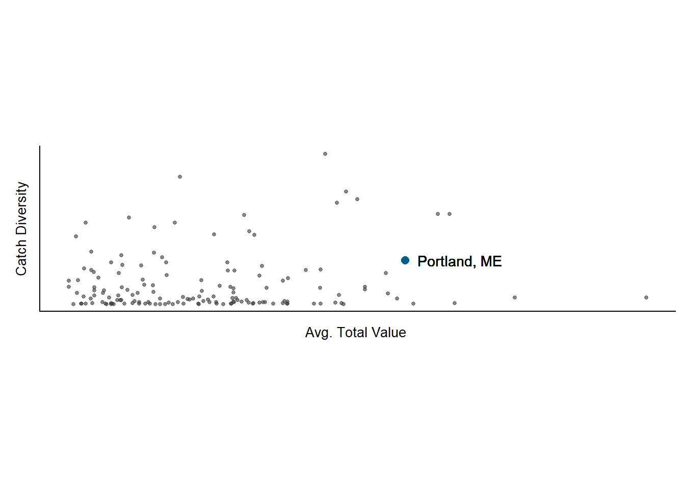
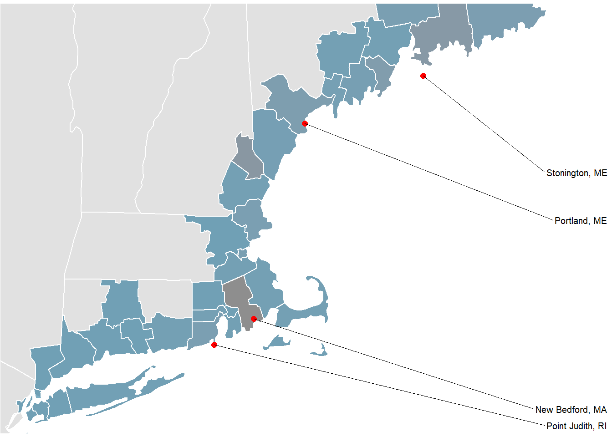

comm_figures_2
Brian Kennedy
March 4, 2019
Goal:
Produce figures for page 1 of the final report. The figures should have consistent formatting and allow for the right ‘flow’ of information as the reader progresses across the page.
Formatting Considerations
- Text: All figures are roboto condensed
- Palette: I tried to implement the GMRI color scale as per Elijah. At this stage this just means a continuous or discrete palette between gray and blue. Saturation / transparency was hard to dial and varies across the document
- Borders: I tried to go with a white borders on major plot elements
Landings
Simple area chart of annual landings w/ the baseline period treated with a distinct fill.
Data: LANPORT / GAR 82_2015

Top Species
Bar Plot of the ‘Top 4’ species + ‘Other’
Data: LANPORT / GAR 82_2015, this can be changed to CFDERS easily

Treemaps
Gear and Species
Tree map built from avg. landings value across the baseline period. I have concerns that the species sub-group is TMI and complicates our bar chart.
Data: CFDERS 2011 - 2015

Just Gear
Tree map built from avg. landings value across the baseline period. Species subgroup is excluded here.
Data: CFDERS 2011 - 2015

Scatterplot
Scatter plot with catch diversity and log transformed Avg. Value. I have excluded axis values here.

Map
Basic baseman. Palette has been reversed.
Data: LANPORT / GAR 82_2015 + default GGMAP categories
